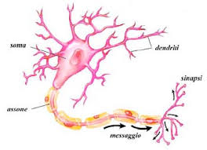
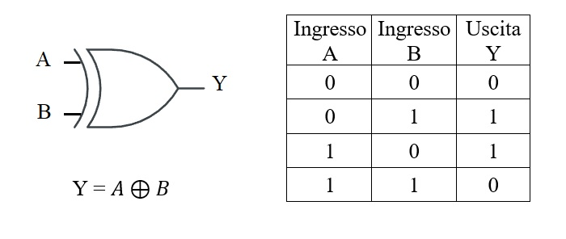
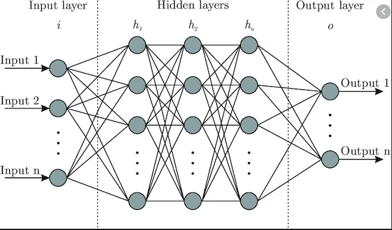

Il legame tra Biologia e Modelli Matematici
Nel mio percorso di studi sulle nuove tecnologie, c'è un argomento che mi ha affascinato più di tutti: il legame tra la biologia del sistema nervoso e le reti neurali artificiali. È sorprendente vedere come la scienza sia riuscita a prendere qualcosa di così complesso e vivo come un neurone biologico e a trasformarlo in un modello matematico astratto, gettando le basi per i sistemi intelligenti che usiamo oggi.
Il punto di partenza: il neurone biologico
Fino alla metà del Novecento, la fisiologia e la medicina avevano identificato le caratteristiche fondamentali dei neuroni biologici. Queste cellule sono composte da tre parti principali: i dendriti, che ricevono i segnali dall'esterno; il soma (o corpo cellulare), che elabora le informazioni; e l'assone, che trasmette il segnale in uscita. Organizzati in una fitta rete e caratterizzati da un'attività elettrica innata, i neuroni comunicano attraverso le sinapsi in risposta agli stimoli. L'intuizione rivoluzionaria dei pionieri dell'informatica è stata quella di isolare questa capacità di calcolo, ignorando temporaneamente le dinamiche biologiche minute per riprodurle in termini puramente logici.

Dai primi modelli logici al Percettrone (1943-1957)
Il primo passo verso questa traduzione avvenne nel 1943, when Warren McCulloch e Walter Pitts formularono un modello matematico in cui i segnali in ingresso venivano moltiplicati per dei pesi e sommati nel nucleo; l'output finale veniva poi determinato da una funzione di attivazione a gradino, che emulava il comportamento del "tutto o nulla" del neurone biologico. Su queste fondamenta teoriche, nel 1957 Frank Rosenblatt compì una svolta epocale realizzando il "Percettrone": ispirandosi alla corteccia visiva, creò la prima vera implementazione fisica e algoritmica capace di modificare i propri pesi in modo iterativo quando commetteva un errore. Il Percettrone dimostrò così che un circuito artificiale poteva apprendere autonomamente a riconoscere stimoli visivi, ponendo le basi per il moderno machine learning.

Il limite del Percettrone e il problema dello XOR
Nonostante l'entusiasmo iniziale, nel 1969 gli scienziati Marvin Minsky e Seymour Papert dimostrarono matematicamente un limite invalicabile del Percettrone singolo: esso era in grado di risolvere solo problemi linearmente separabili (come le funzioni logiche AND e OR), dove una retta nello spazio può dividere nettamente le classi di output. Dimostrarono che il Percettrone non era assolutamente in grado di calcolare la funzione logica dello XOR (OR esclusivo). Questa rivelazione portò a una drastica riduzione dei finanziamenti alla ricerca, periodo noto come il primo "Inverno dell'Intelligenza Artificiale", poiché divenne chiaro che per risolvere problemi complessi e non lineari era necessario unire più neuroni su più livelli.
L'architettura del Percettrone Multistrato (MLP)
La risposta al problema dello XOR arrivò strutturando i neuroni artificiali in reti più complesse composte da tre tipologie di livelli (Layer):
- Input Layer (Livello di Ingresso): Riceve i dati grezzi dall'esterno (es. i pixel di un'immagine o i parametri di un dataset).
- Hidden Layers (Livelli Nascosti): Uno o più livelli intermedi in cui avviene la vera estrazione delle caratteristiche (feature extraction). Più la rete è profonda (da cui il termine Deep Learning), più questi livelli riescono a elaborare concetti astratti.
- Output Layer (Livello di Uscita): Fornisce la risposta finale del sistema (es. una classificazione o una predizione numerica).
In questa struttura, le funzioni di attivazione non lineari (come la ReLU o la Sigmoide) sostituiscono la vecchia funzione a gradino, permettendo alla rete di curvare lo spazio matematico e mappare relazioni non lineari.

L'evoluzione moderna: la Backpropagation
Nelle reti neurali multilivello contemporanee, i limiti dei primi modelli sono stati superati grazie all'algoritmo di Backpropagation (retropropagazione dell'errore). Per far sì che una rete complessa impari correttamente, l'errore commesso nella fase di output (quantificato da una funzione di costo) viene mappato a ritroso su tutti i parametri e i pesi responsabili di quella deviazione.
Attraverso l'algoritmo di discesa del gradiente, che sfrutta gli strumenti matematici delle derivate parziali e la regola della catena (chain rule), il sistema calcola l'impatto di ogni singola connessione sull'errore finale. I pesi vengono così aggiornati in modo millimetrico, dal fondo verso l'inizio della rete, ottimizzando le prestazioni del modello. Questo meccanismo rappresenta la perfetta sintesi di come la logica rigorosa della matematica possa dare vita all'Intelligenza Artificiale, traendo una continua e proficua ispirazione dalle strutture della natura.
Un cambio di paradigma: Software Tradizionale vs Machine Learning
Per un informatico, l'aspetto più rivoluzionario di questo percorso biologico-matematico risiede nel cambio di paradigma della programmazione. Nella programmazione tradizionale , lo sviluppatore scrive le regole algoritmiche logiche e fornisce i dati di input per ottenere un risultato. Nel Machine Learning, invertiamo completamente il processo: diamo in pasto all'algoritmo i dati di addestramento e i risultati attesi (label), e l'architettura neurale, attraverso i continui cicli di feed-forward e backpropagation, genera autonomamente le regole ottimali e mappa i suoi pesi interni. L'IA non viene programmata riga per riga, viene addestrata.